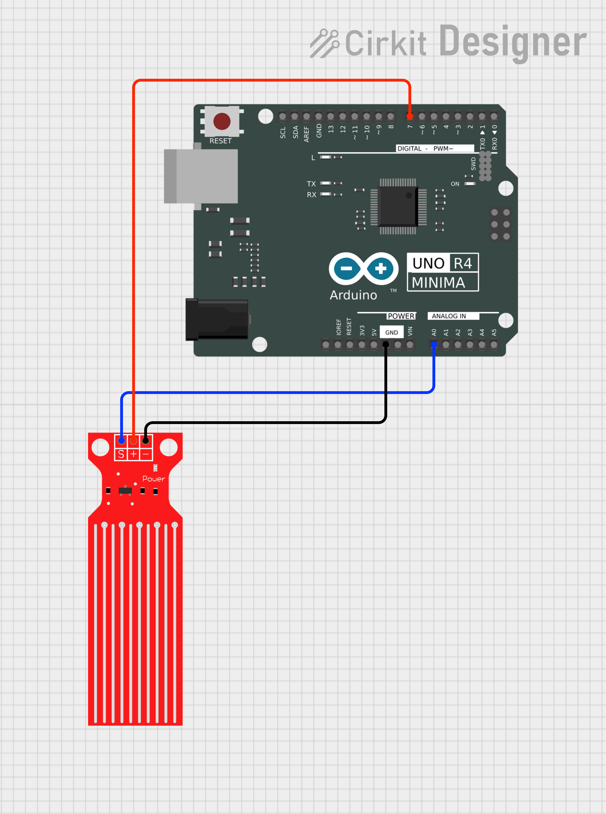
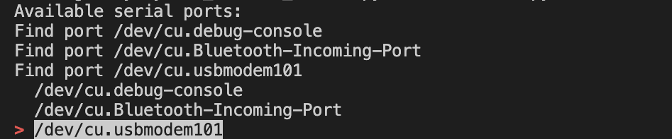
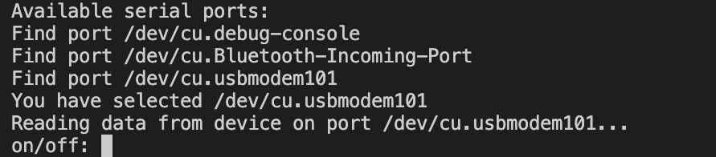

Arduino Overview
Arduino Circuit Overview

The scope of this arduino circuit is to read water level data, by using a water level sensor.
The circuit is pretty simple, it just needs ground, power and data pins connected to the arduino board.
- Ground pin: Connects to the GND pin on the Arduino board.
- Power pin: Connects to a digital pin on the Arduino board, in this case pin 7.
- Data pin: Connects to an analog input pin on the Arduino board, here being A0.
Arduino code Overview
The Arduino code is responsible for reading the water level data from the sensor and sending it to the connected device via serial communication.
First, the code initializes the necessary pins.
// Pin definitions
const int waterSensorPowerPin = 7; // Pin to power the water sensor
const int waterSensorPin = A0; // Analog pin connected to the water sensor
// Since the max value should be around 520, we set the threshold at 500
const int upperThreshold = 500; // Threshold to trigger alert
Then, we setup the input and output pins.
void setup() {
Serial.begin(9600);
// Set the power pin as output
pinMode(waterSensorPowerPin, OUTPUT);
// Ensure the sensor is powered off initially
digitalWrite(waterSensorPowerPin, LOW);
// Set the alert led pin as output
pinMode(LED_BUILTIN, OUTPUT);
}
In the main loop, we read the water level and print it to the serial monitor every 2 seconds.
To do that, we create a function called
readWaterLevel() that handles the reading of the sensor and the alert mechanism.
void loop() {
// We create a function to read the water level and print it
Serial.print("Water Level: ");
Serial.println(readWaterLevel());
// Wait for 2 seconds before the next reading
delay(2000);
}
int readWaterLevel() {
// Power on the water sensor
digitalWrite(waterSensorPowerPin, HIGH);
// Wait for the sensor to stabilize
delay(100);
// Read the water sensor value
int sensorValue = analogRead(waterSensorPin);
// Check if the water level is above a certain threshold
if (sensorValue > upperThreshold) {
digitalWrite(LED_BUILTIN, HIGH); // Turn on alert LED
} else {
digitalWrite(LED_BUILTIN, LOW); // Turn off alert LED
}
// Power off the water sensor to prolong its life
digitalWrite(waterSensorPowerPin, LOW);
return sensorValue;
}
That's it! This is the basic overview of the Arduino circuit and code for reading water level data using a water level sensor.
Python program
The Python program is responsible for reading the water level data from the serial port,
storing it in a MySQL database,
and displaying it in a graphical user interface (GUI) using Tkinter.
Step 1: Dependencies
First, we need to install the required dependencies.
We use pyserial for serial communication,
mysql-connector-python for MySQL database interaction,
python-dotenv for loading environment variables from a .env file,
pyserial for serial communication,
pandas for easier data visualization from the database,
and simple-term-menu to create an interactive terminal menu (only works on MacOS and Linux).
You can install these dependencies using pip:
pip install pyserial mysql-connector-python python-dotenv pandas simple-term-menu
Step 2: Environment Variables
We store sensitive information such as database credentials in a .env file.
In the project, there already is a .env.template file that you can use as a template.
DB_HOST=your_database_host
DB_USER=your_database_user
DB_PASSWORD=your_database_password
DB_NAME=your_database_name
Rename this file to .env and fill in your database credentials.
Step 3: Database Initialization
Before running the Python program, we need to initialize the database.
You can do this by executing the dbinit.sql script in your MySQL database.
We first start by creating the database:
CREATE DATABASE your_database_name;
USE your_database_name;
Then, we define the Device table:
CREATE TABLE Device (
device_id INT AUTO_INCREMENT PRIMARY KEY,
device_name VARCHAR(255) NOT NULL,
baud INT NOT NULL DEFAULT 9600,
is_deleted BOOLEAN NOT NULL DEFAULT FALSE,
UNIQUE (device_name)
);
Step 4: Python Code
We now can define our classes.
Device: Blueprint of any connected device, it is an abstract class.WaterDevice: Inherits fromDevice, represents an Arduino water level sensor device.SimpleDevice: Inherits fromDevice, represents a generic device that turns on and off the LED based on user input.DbManager: Manages the connection and operations with the MySQL database.
main.py file, which handles user interaction, device management, and data reading/storage.

